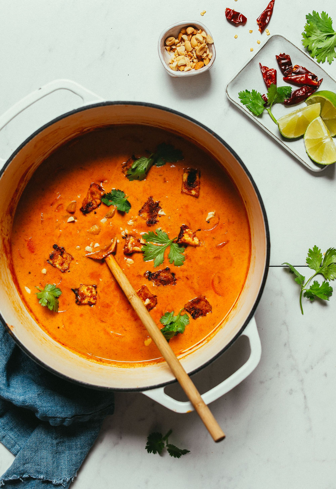

Massaman Curry

Description
A warm and hearty dish that has a long ingredient list but actually comes together quite easily and the one pot clean up is a huge plus
We serve this dish over jasmine white rice but feel free to mix and match it with other carbs as you see fit.
Ingredients
Protein Options (Choose One)
- 1 Batch Crispy Peanut Tofu
- 1 Can Chickpeas
- 1/2 Lb Shrimp
- 1 Large Skinless Chicken Breast, Cubed
Curry
- 2 Tbsp Coconut or Avocado Oil
- 3 Medium Shallots
- 1 tsp Whole Cumin Seed (or Sub Powder)
- 5 Tbsp Red Curry Paste
- 1-1/2 Cups Baby Potatoes, Cut Into Bite Size Pieces
- 2 Large Carrots, Peeled and Diced 1/4 Inch Thick
- 2 14oz Cans Light Fat Coconut Milk
- 1-1/2 Cups Water
- 1/4 tsp Ground Cinnamon
- 1 Dash Each Cardamom and Nutmeg
- 2-3 Tbsp Coconut Aminos or Sub Low Sodium Soy Sauce
- 1-2 Tbsp Maple Syrup or Coconut Sugar
- 2 Tbsp Peanut Butter
- 1-2 Tbsp Lime Juice (or Lemon)
For Serving optional
- Cauliflower Rice, Rice, or Quinoa
- Lime Wedges
- Fresh Cilantro
- Steamed or Curried Greens
- Roasted Salted Peanuts, Chopped
Directions
- Heat a large pot or dutch oven (we like this one) over medium heat. Once hot, add oil (or water) and shallot. Saute 2 minutes, stirring frequently. Turn down heat if browning too quickly.
- Add whole cumin and coriander seeds (or powder) and saute for another 1-2 minutes, stirring frequently. Then add red curry paste and stir to combine. Cook for 1 minute more.
- Add potatoes and carrots and stir to coat. Cook for 2 minutes. Then add coconut milk, water (starting with the lesser amount), cinnamon, cardamom, nutmeg, coconut aminos, maple syrup, and peanut butter. (Reserve lime juice for later).
- The liquid should cover all of the ingredients, if it does not, add a bit more coconut milk or water to cover. Bring to a simmer over medium-high heat. Once it reaches a low boil, reduce heat to a simmer (add meat at this time if cooking with shrimp or chicken) and cook for 10-15 minutes uncovered. You don't want it boiling, so ensure it's cooking over low heat at a simmer.
- Add lime in the last few minutes of cooking and stir. Then taste and adjust flavor as needed, adding more lime for acidity, salt or coconut aminos for saltiness, curry paste for heat / more intense curry taste, maple syrup for sweetness, cinnamon or nutmeg for warmth, or peanut butter for creaminess / more intense peanut flavor. Stir and cook a few minutes more. Then turn off heat and let stand for at least 5 minutes before serving (this allows the flavors to meld).
- To serve, divide between serving bowls and enjoy as is or with a side of rice, cauliflower rice, quinoa, or steamed greens (optional). Fresh lime juice, cilantro, and roasted peanuts (optional) make lovely additions as well.
Return Home